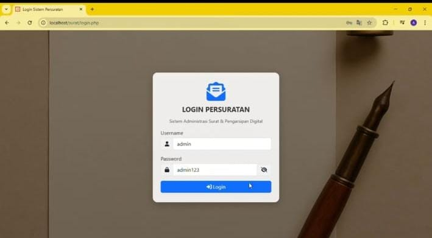
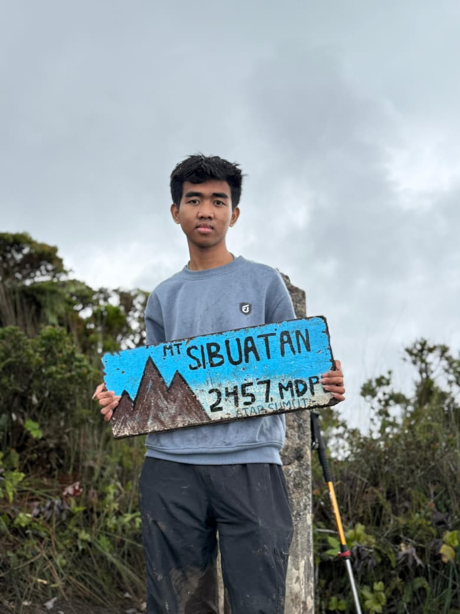

01Web applicationOpen story ↗Dashboard yang menyusun alur permintaan surat agar lebih jelas, cepat dipindai, dan mudah dipakai setiap hari.
Programmer · Photographer · Indonesia
Saya DWI GHALIB RAMADHAN, biasa dipanggil DWII. Saya membangun website yang rapi, lalu mengabadikan perjalanan dan momen yang saya temui.

Nama saya DWI GHALIB RAMADHAN, tetapi teman-teman biasanya memanggil saya DWII. Saya seorang web developer yang juga menyukai fotografi—dua kegiatan yang sama-sama melatih saya untuk memperhatikan detail.
Di dunia web, saya fokus pada interface yang jelas, alur yang mudah dipahami, dan interaksi yang terasa ringan. Di balik kamera, saya mencari cahaya, tekstur, dan suasana yang membuat sebuah tempat punya cerita. Portfolio ini adalah ruang untuk mempertemukan dua sisi tersebut: membuat sesuatu yang berguna dan menyimpan sesuatu yang berarti.
Bukan sekadar daftar software. Ini adalah alat yang membantu saya mengubah rasa ingin tahu menjadi interface, visual, dan cerita.
Saya menikmati proses membentuk website dari struktur yang jelas, visual yang terarah, hingga interaksi kecil yang membuatnya terasa hidup.
Fotografi membuat saya memperhatikan hal-hal kecil: arah cahaya, warna yang bertemu, tekstur tempat, dan momen yang sering berlalu sebelum sempat disadari.
02 — Selected works
Scroll ke bawah untuk
menjelajah ke samping ↘
Setiap proyek dimulai dari pertanyaan sederhana, lalu tumbuh lewat percakapan, eksperimen, dan perhatian pada detail.
Mendengarkan kebutuhan, memahami konteks, dan mengamati detail yang membuat sebuah masalah terasa nyata.
Menyusun arah visual dan teknis yang sederhana, jelas, serta punya alasan di balik setiap keputusan.
Mengubah ide menjadi interface, gambar, atau pengalaman yang siap dipakai dan punya ruang untuk berkembang.
Hal-hal yang sedang saya pelajari untuk membuat karya berikutnya terasa lebih matang.
Mengenal ritme, warna, dan cara membangun cerita lewat visual.
Mengubah ketertarikan pada desain menjadi interface yang bisa digunakan.
Project, foto, kompetisi, dan rasa ingin tahu berjalan di jalur yang sama.
04 — Mari terhubung
Kalau kamu punya ide website, proyek foto, atau hanya ingin bertukar cerita, kirim pesan. Saya akan membalas secepat mungkin.